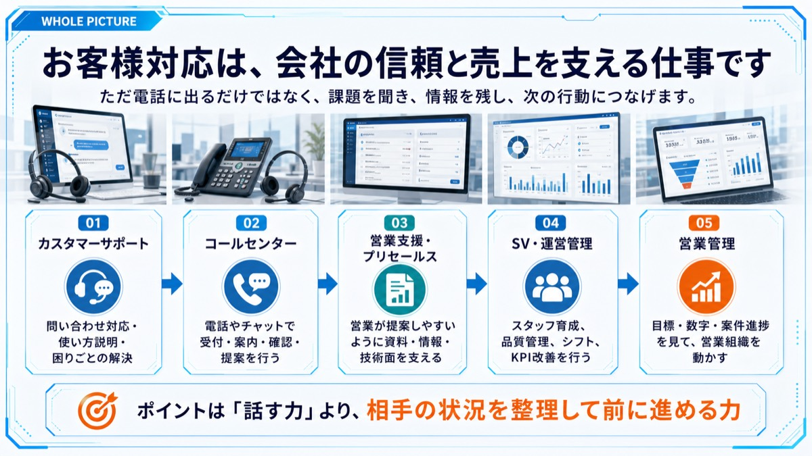
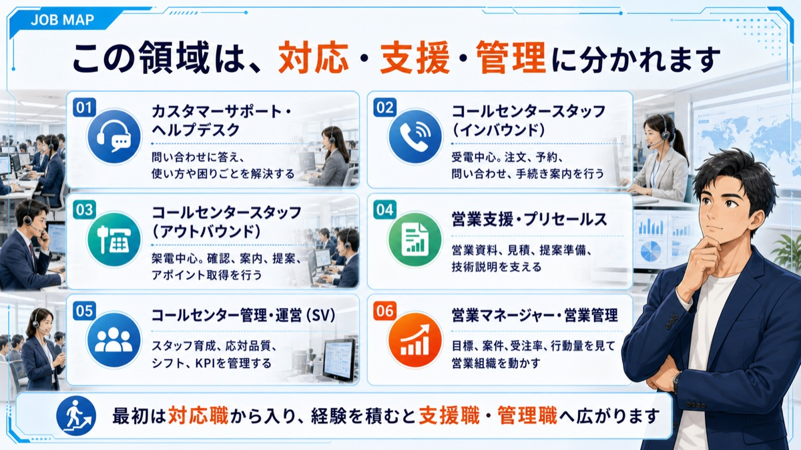
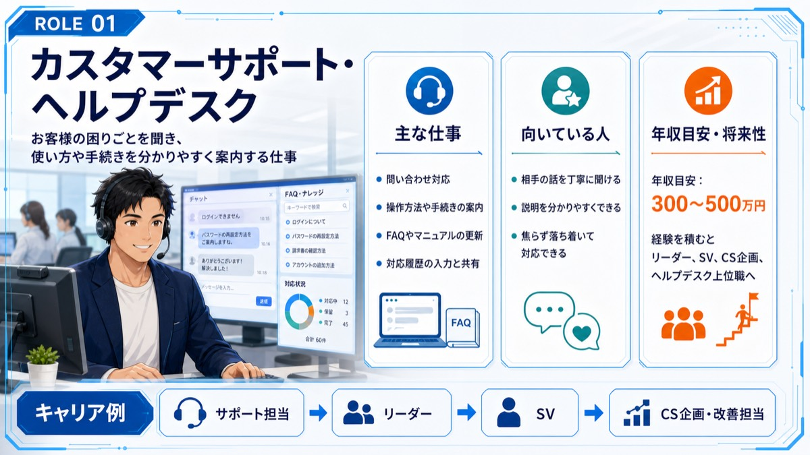
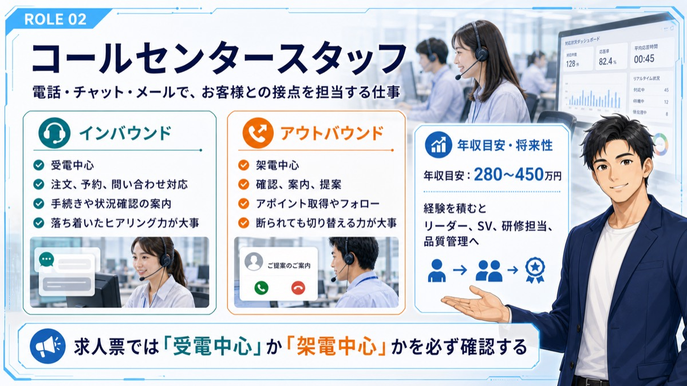
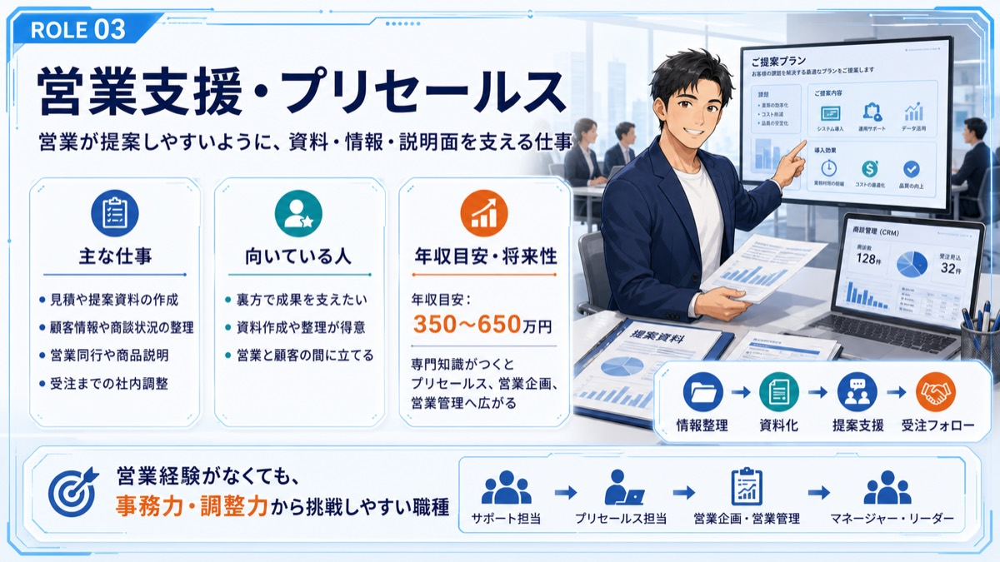
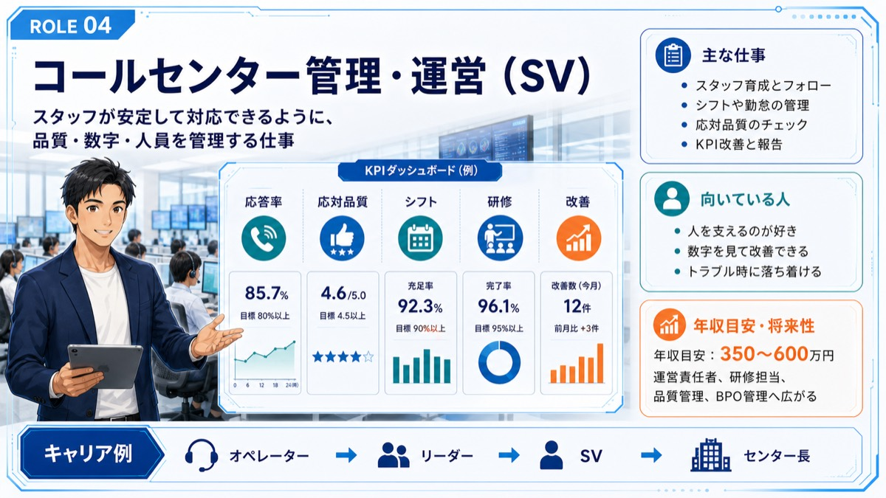
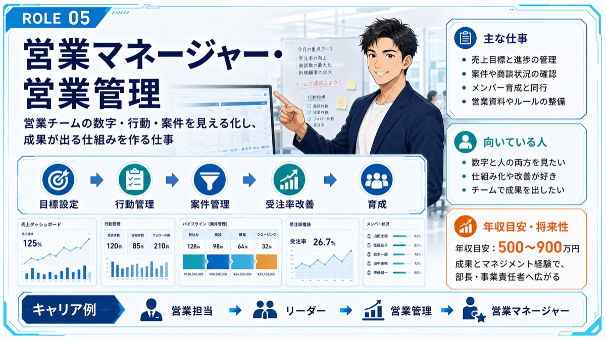
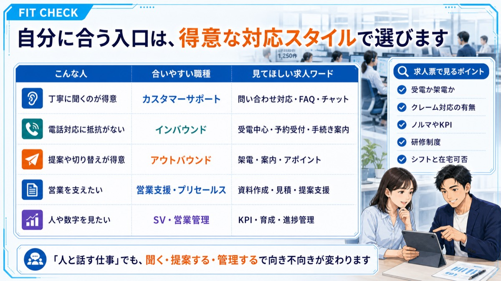

Job Lesson
カスタマーサポート・コールセンター営業管理を理解する
問い合わせ対応やサポート職は、相手の困りごとを受け止めて解決へ導く仕事です。








次に見るもの
カスタマーサポート・コールセンター営業管理に興味がある方は、面接前に回答の組み立て方も確認してください。
Job Lesson
問い合わせ対応やサポート職は、相手の困りごとを受け止めて解決へ導く仕事です。








カスタマーサポート・コールセンター営業管理に興味がある方は、面接前に回答の組み立て方も確認してください。